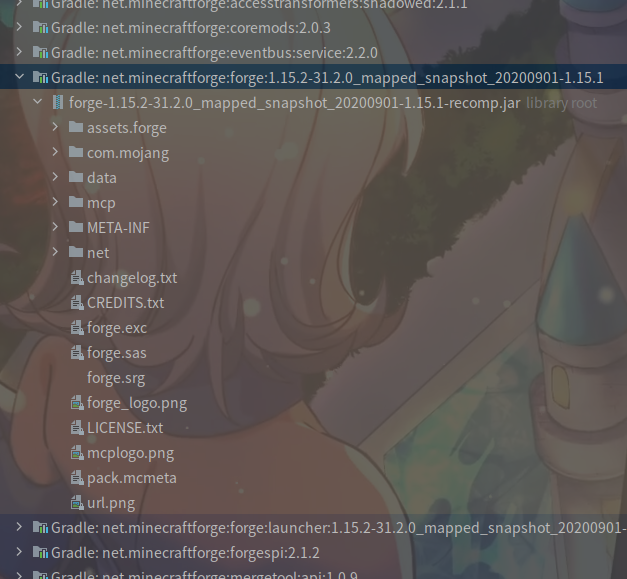

配置Forge
下载完Mdk，接着就是要配置了。
Forge Mdk目录结构概述
打开Forge Mdk的压缩包，你可以看到如下文件：
|——gradle
| |——（此处省略）
|
|——src
| |——（此处省略）
|
|——.gitignore
|——build.gradle
|——changelog.txt
|——CREDITS.txt
|——gradle.properties
|——gradlew
|——gradlew.bat
|——LICENSE.txt
|——README.txt
我们新建一个目录作为项目文件夹，然后将除txt以外的文件/文件夹全部解压到该目录下。接着，就要进行构建的准备了。
构建前的准备
首先，先打开build.gradle，找到以下几行：（第16～18行）
version = '1.0'
group = 'com.yourname.modid' // 关于group，下文会讲到
archivesBaseName = 'modid' // 关于modid，下文会讲到
请根据个人情况修改。
如果group不知道怎么写，可以参照以下内容：
group表示组id，建议使用Java包命名规范，比如如果你这个项目所在网站为www.example.com，那么包名建议为：
com.example.<your_username>.<your_project_name>比如本教程的所有代码都在这个包下：
com.github.ustc_zzzz.fmltutor当然如果没有网站，也可以直接使用用户名：
<your_username>.<your_project_name>比如对于本教程的代码，可以这样命名：
ustc_zzzz.fmltutor当然，也有直接以Mod名称作为包命名的，等等。
总而言之，包的命名以不冲突为前提。
（原作者：zzzz，原文）
如果version不知道怎么写，可以参照一个叫语义化版本的标准（英文原文）。
modid
modid是Mod的唯一标识符，用于与其他Mod相区分。
请注意以下几点：
- modid必须为全小写，不能使用除小写字母和下划线以外的其它符号。否则你的Mod在运行时可能会出现一些奇怪的问题。
- modid不得超过64个字符，我认为没人会起这么长的modid。
- modid在Mod发布后，就不能轻易改动，因为其它Mod都是根据modid来识别的。Minecraft也是根据modid识别你的物品/方块等的，随意改变modid将会带来不可预料的后果。
修改mappings版本
再找到以下这行：（第28行）
mappings channel: 'snapshot', version: '20200514-1.15.1'
mappings版本，其实就是MCP版本，MCP版本号分两种：
- stable
- snapshot
我们平时用snapshot，版本号格式为YYYYMMDD-MCVersion。
接下来，我们要修改mappings版本。
首先，到Forge的maven库，点击“Show all Versions”然后翻倒最底，找到最新版本号（编写教程时，最新版本号为20200901），旁边有个小虫子，鼠标指过去，可以看到对应的Minecraft版本为1.15.1（若你看到的版本高于1.15.2，请自觉往上翻，找到对应1.15.2的最新版）。
这样，我们获取到的mappings版本则为20200901-1.15.1，将原先的20200514-1.15.1替换即可
注：mappings版本在小版本之间可以通用，例如1.14.3的mappings可以用于1.14.4。
修改Manifest信息
找到以下几行：（第115～127行）
jar {
manifest {
attributes([
"Specification-Title": "examplemod",
"Specification-Vendor": "examplemodsareus",
"Specification-Version": "1",
"Implementation-Title": project.name,
"Implementation-Version": "${version}",
"Implementation-Vendor" :"examplemodsareus",
"Implementation-Timestamp": new Date().format("yyyy-MM-dd'T'HH:mm:ssZ")
])
}
}
根据自身情况修改。
开始配置
首先，先说明一下，Forge是一个Gradle项目，Gradle是一个著名的项目构建工具，而Forge官方写了一个叫ForgeGradle的插件负责开发环境的配置。
我们打开Forge Mdk压缩包里的README.txt，然后根据自己的IDE，照着上面的做即可。
由于网络问题，配置可能会极慢（所以这一步劝退了很多人）。因此，有条件的读者建议使用国外的代理（方法在下文）。
如果你没有代理，建议使用ForgeGradleCN或离线包。
其次，还有zzzz提供的代理可以选择，翻倒对应的内容即可。（注意：此代理只能用来构建Forge，无法访问其他网站。且不要看该文章的其它部分，该文章是1.8.9的）
设置代理
Eclipse的设置比较简单，直接在命令行末尾加上如下参数即可：
- 针对Socks代理：
-DsocksProxyHost=<主机名> -DsocksProxyPort=<端口号> - 针对Http代理：
-Dhttps.proxyHost=<主机名> -Dhttps.proxyPort=<端口号> - 针对Https代理：
-Dhttp.proxyHost=<主机名> -Dhttp.proxyPort=<端口号>
对于IDEA，打开Settings，在左上角的搜索框里输入proxy，即可找到相应的设置。
完成之后
在配置完成后，先不要直接开始，先点击左上角（Eclipse）或右上角（IDEA）的运行按钮，尝试启动一下Minecraft。
顺便看看External Libraries，里面的库是否正常（如下图）

启动极慢的解决方案
你或许会发现启动很慢，这是因为Forge1.13+使用了联网的方式启动，因此你可以参阅纪华裕的方法。
注意：第三步不要照抄！不要照抄！不要照抄！对比二者的区别，然后自己进行修改！